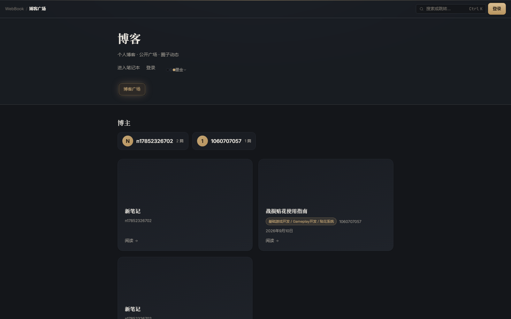

战斗演出
战斗演出编辑器架构设计
时间轴 + 事件驱动，编辑器只描述意图。
93a9f61 给 /blog 接上了 ShellTopBar —— 这是对的一步。
但 BlogHubPage.tsx:174 的 <header class="blog-header"> 还在渲染，
于是出现了两层头，而且「登录」「皮肤」各出现两次。

blog-header：博客标题 / 进入笔记本 · 登录 · 墨金 / 博客广场 tab —— 而「登录」顶栏已有一个
CircleListPage 已引入 ShellTopBar，但游客守卫先把它重定向到了登录页 —— 圈子的解释一个字都没有| 问题 | 证据 |
|---|---|
| 双层头部 | BlogHubPage.tsx:160 渲染 <ShellTopBar />，:174 紧接着渲染 <header class="blog-header">。后者里还有 进入笔记本 / 登录 / 墨金 一行 —— 与顶栏的账号入口、账号菜单里的皮肤重复 |
| 右侧 40% 空着 | 1600px 下头部与列表都在 x=215→785 的 570px 列里，785→1600 什么都没有 |
| 卡片是空灰盒子 | 没有 cover 的笔记，卡片上半部是一块 120px 的深灰空区 |
时间轴 + 事件驱动，编辑器只描述意图。
换装流程、datatable 配置、贴图尺寸。
一次掉帧的完整排查过程。
（还没有摘要。）
改动
删掉 blog-header 里的标题块与「进入笔记本 / 登录 / 墨金」一行（顶栏与账号菜单已覆盖）；
只保留 blog-tabs 三个标签，作为顶栏下的第二层。
内容从 570px 铺到 1180px。卡片用按 note.id 派生的确定性渐变封面。
/blog/:ownerId/:noteId
现在只有 blog-header（BlogPostPage.tsx:93），没有共享顶栏 ——
读到一半想回笔记，只能按浏览器后退。
补 <ShellTopBar left={面包屑} />，删掉 blog-header。
/app/circles（游客）
游客现在被守卫直接重定向到登录页（截图与 /login 逐字节相同）。
公开圈子本来是可以匿名看的，先给一个能读的页面 + 一条登录提示，转化率比一堵墙好。
公开圈子可以直接看。要创建圈子、接受邀请或写协作笔记，登录即可（本地草稿不会丢）。
| 项 | 改动 | 收益 |
|---|---|---|
| 双层头 | 删 blog-header 的标题块与导航行，保留 tabs | 「登录」「皮肤」不再重复出现 |
| 内容宽度 | 570px → 1180px（.wrap） | 右侧 40% 不再空着 |
| 卡片封面 | 按 note.id 派生 4 套确定性渐变 + 居中文件图标 | 零数据改动，列表立刻有颜色 |
| 文章页 | 补 ShellTopBar | 读到一半能直接回笔记 / 圈子 |
| 圈子游客态 | 登录墙 → 可读的圈子列表 + 一条登录提示 | 不再「点进去什么都没有」 |